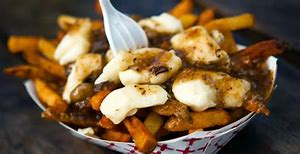

This is a hub where anyone can enjoy recipes from all over the globe. The aim is to a website for food lovers looking to explore their culinary tastes. This dishes will have your mouth watering and stomach growling as you scroll through our options. With a variety of ethnic food groups including Greek, Italian, Spanish, and Mexican, we invite you to explore these delicious dishes and try them for yourself at home.
Here is a seasonal drink for you to enjoy on a nice Autumn day this season. This month features Apple Cider Floats courtesy of Domestically Blissful. This is the perfect fall drink if you want something a little sweet to sip on while you watch the leaves change color, power through assignments for school, write that report for work, or binge your favorite TV shows.